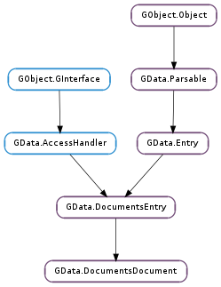

| Subclasses: | GData.DocumentsDrawing, GData.DocumentsPdf, GData.DocumentsPresentation, GData.DocumentsSpreadsheet, GData.DocumentsText |
|---|
| static | new(id) |
| download(service, export_format, cancellable) | |
| get_download_uri(export_format) | |
| get_thumbnail_uri() |
None
None
| Name | Type | Access |
|---|---|---|
| parent | GData.DocumentsEntry | r |
Bases: GData.DocumentsEntry
All the fields in the GData.DocumentsDocument structure are private and should never be accessed directly.
| Parameters: | id (str or None) – the entry’s ID (not the document ID), or None |
|---|---|
| Returns: | a new GData.DocumentsDocument, or None ; unref with GObject.Object.unref () |
| Return type: | GData.DocumentsDocument |
Creates a new GData.DocumentsDocument with the given entry ID (GData.Entry :id ).
| Parameters: |
|
|---|---|
| Raises: | |
| Returns: | a GData.DownloadStream to download the document with, or None ; unref with GObject.Object.unref () |
| Return type: |
Downloads and returns the document file represented by the GData.DocumentsDocument. If the document doesn’t exist, None is returned, but no error is set in error.
export_format should be the file extension of the desired output format for the document, from the list accepted by Google Documents. For example: GData.DOCUMENTS_PRESENTATION_PDF, GData.DOCUMENTS_SPREADSHEET_ODS or GData.DOCUMENTS_TEXT_ODT.
If self is a GData.DocumentsSpreadsheet, only the first grid, or sheet, in the spreadsheet will be downloaded for some export formats. To download a specific a specific grid, use GData.DocumentsSpreadsheet.get_download_uri () with GData.DownloadStream to download the grid manually. See the GLib.Data protocol specification for more information.
To get the content type of the downloaded file, GData.DownloadStream.get_content_type () can be called on the returned GData.DownloadStream. Calling GData.DownloadStream.get_content_length () on the stream will not return a meaningful result, however, as the stream is encoded in chunks, rather than by content length.
In order to cancel the download, a Gio.Cancellable passed in to cancellable must be cancelled using Gio.Cancellable.cancel (). Cancelling the individual Gio.InputStream operations on the GData.DownloadStream will not cancel the entire download; merely the read or close operation in question. See the GData.DownloadStream :cancellable for more details.
If service isn’t authenticated, a GData.ServiceError.AUTHENTICATION_REQUIRED will be returned.
If there is an error getting the document, a GData.ServiceError.PROTOCOL_ERROR error will be returned.
| Parameters: | export_format (str) – the format in which the document should be exported when downloaded |
|---|---|
| Returns: | the download URI; free with GLib.free () |
| Return type: | str |
Builds and returns the download URI for the given GData.DocumentsDocument in the desired format. Note that directly downloading the document using this URI isn’t possible, as authentication is required. You should instead use GData.DownloadStream.new () with the URI, and use the resulting Gio.InputStream.
export_format should be the file extension of the desired output format for the document, from the list accepted by Google Documents. For example: GData.DOCUMENTS_PRESENTATION_PDF, GData.DOCUMENTS_SPREADSHEET_ODS or GData.DOCUMENTS_TEXT_ODT.
| Returns: | the URI of the document’s thumbnail, or None |
|---|---|
| Return type: | str |
Gets the URI of the thumbnail for the GData.DocumentsDocument. If no thumbnail exists for the document, None will be returned.
The thumbnail may then be downloaded using a GData.DownloadStream.
Downloading a Document Thumbnail
GDataDocumentsService *service;
const gchar *thumbnail_uri;
GCancellable *cancellable;
GdkPixbuf *pixbuf;
GError *error = NULL;
service = get_my_documents_service ();
thumbnail_uri = gdata_documents_document_get_thumbnail_uri (my_document);
cancellable = g_cancellable_new ();
/* Prepare a download stream */
download_stream = GDATA_DOWNLOAD_STREAM (gdata_download_stream_new (GDATA_SERVICE (service), NULL, thumbnail_uri, cancellable));
/* Download into a new GdkPixbuf. This can be cancelled using 'cancellable'. */
pixbuf = gdk_pixbuf_new_from_stream (G_INPUT_STREAM (download_stream), NULL, &error);
if (error != NULL) {
/* Handle the error. */
g_error_free (error);
}
g_object_unref (download_stream);
g_object_unref (cancellable);
/* Do something with the GdkPixbuf. */
g_object_unref (pixbuf);